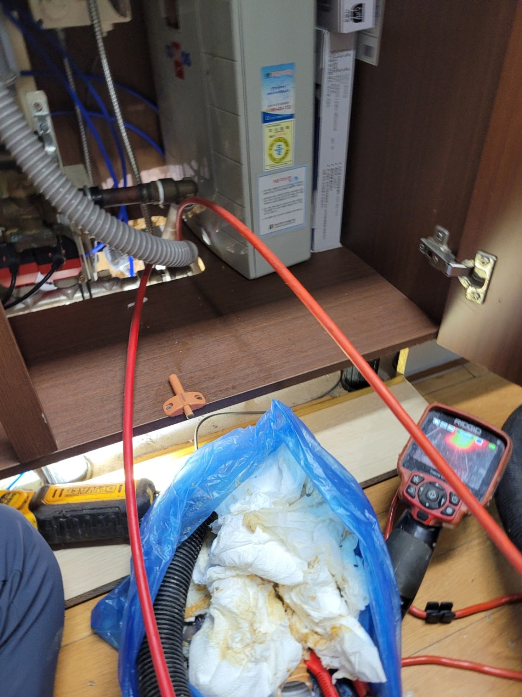
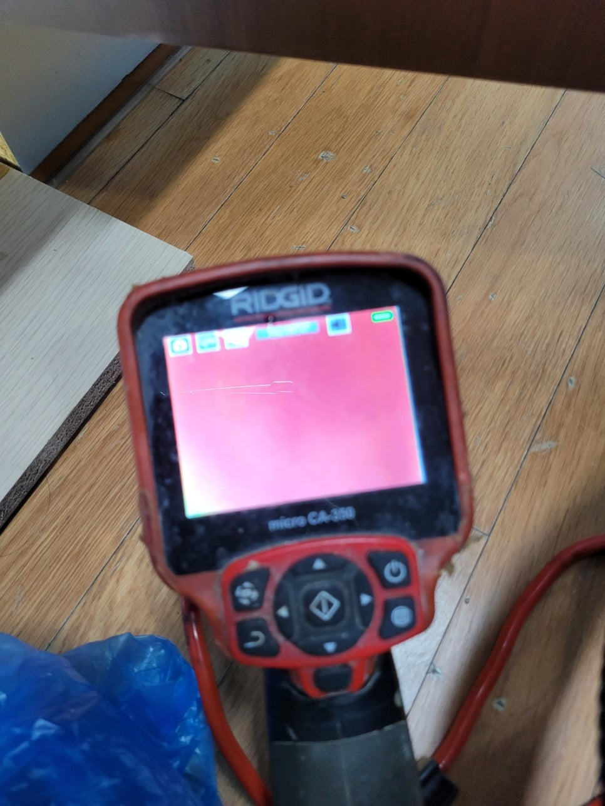
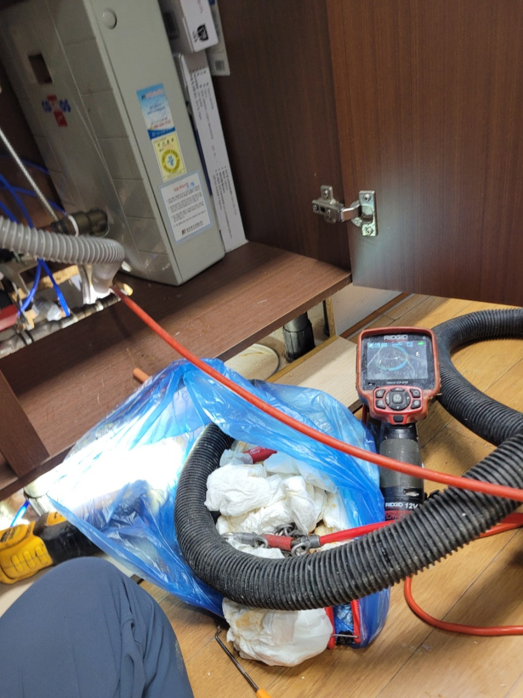
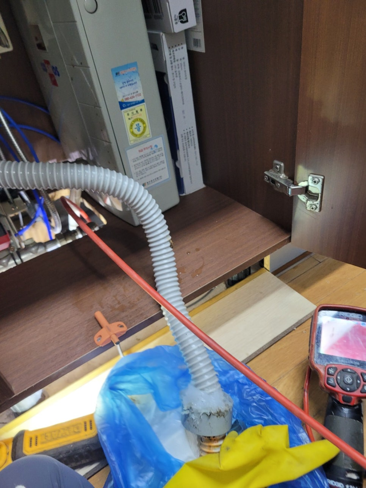
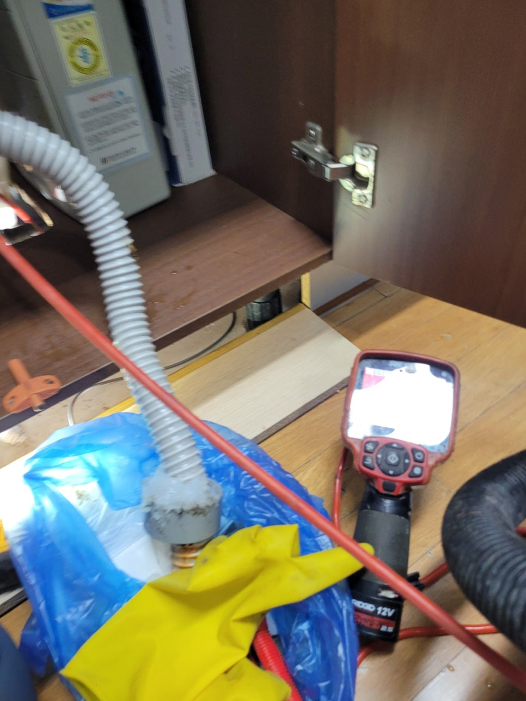

🏠 동탄 산척동 싱크대 배수구막힘, 기름으로 막힌 배관 세척작업
화성 산척동 싱크대막힘 전문 시공 후기

📋 작업 개요
- 위치: 화성 산척동, 산척동, 화성
- 서비스 유형: 싱크대막힘, 변기막힘, 하수구막힘, 배관막힘, 맨홀막힘, 누수수리, 역류해결, 뚫는업체, 배관청소, 고압세척
- 작업 일시: 2026. 4. 9. 17:09
- 업체명: 하수구수사대 (010-5615-2118)
🔍 문제 상황
안녕하세요.
배관전문업체 "하수구수사대" 입니다.
동탄 싱크대배수관막힘 산척동 주방물역류 배관뚫는곳
일상 생활에서 뜻하지 않게 트러블이 발생하게 되면 많은 분들이 고민되실 텐데요.
특히나 물을 많이 사용하는 주방이나 욕실에서 어느 순간 막힘 현상이 생겨 물을 아예 사용하지 못하는 상황인 경우에는 얼른 전문 업체에 의뢰하시는 게 현명한 방법입니다.
주방 싱크대에 물이 고이는 문제가 발생한다면 음식을 하고 식재료를 다듬는 등의 과정에 차질이 빚어질 수 밖에 없습니다.
또한 식사가 끝난 뒤 설거지 하는 것도 어려워지므로 막힘 증상이 있으면 신속하게 전문가에게 맡기는 것이 좋아요.
며칠 전에도 한 고객님 댁에 싱크대 막힘 현상이 나타나서 문제의 원인을 찾아서 해결해 드렸습니다.
이 댁은 싱크대를 바꾼지 얼마 되지 않았음에도 이런 막힘 현상이 나타난 것이 의아하긴 했어요.
혼자 힘으로 해결하기 힘든 문제이기 때문에 전문 업체인 저희한테 연락주셨다고 합니다.
현장을 방문해 가장 먼저 살펴 본 부분은 바로 싱크대 하부장 아래쪽이었어요.
저희가 봤을 땐 벌써 물이 넘쳐 흘러서 흥건히 젖어있는 상태였고, 역류한 양도 상당히 많은 것 같았습니다.

🔎 원인 분석
💡 전문가 진단: 정밀 진단 장비를 사용하여 슬러지의 고착 여부를 판명하고 타격/세척 작업을 실시했습니다.
만약 이 상태로 방치될 경우에는 곰팡이가 필 뿐만 아니라 아래층에도 누수가 생길 수 있다 보니 바로 작업을 진행했습니다.
첫 번째 작업을 위해서 싱크대 아래에 연결되어 있는 주름관을 해체해서 확인해 보니 역시 이물질이 가득 차 있었습니다.
이 까만 얼룩들이 찌꺼기라고 보시면 되는데 이 얼룩들이 주름관 벽면에 달라붙어 굳어 있습니다.
게다가 하수도 위쪽에도 이런 찌꺼기들이 다량 붙어있는 상태였으므로 완전히 없애기 위해 석션기를 사용했습니다.
석션기는 주름관에 쌓인 이물질 외에도 하수관 깊은 곳에 쌓인 찌꺼기들까지 제거할 수 있는 장비인데 이같은 막힘 현상이 발생했을 때 적절한 장비입니다.
찌꺼기들 때문에 입구 쪽이 막혀있는 상황에서도 이 석션기를 이용해 얼마든지 해결할 수 있답니다.
본격적으로 배관을 뚫기 전 석션기로 하수관 내부를 먼저 청소하는 것인데, 막힘 해결에 적절한 방법을 찾기 위한 과정이라고 보시면 되겠습니다.
석션기를 최대한으로 돌려보았지만 막힘 현상이 해결되지 않았기 때문에 하수관 속을 좀 더 꼼꼼하게 살펴보기로 했습니다.
이번에는 하수구 내시경 장비를 통해 깊숙한 부분의 상태를 점검하는 것인데요.
여기 보이는 화면에서는 온통 빨갛게 나타나죠.
설비 헤드쪽에 전등이 달려 있어서 그 불로 기름찌꺼기를 비춰보면 이런 빨간색으로 보인답니다.
즉, 배관 내부에 기름찌꺼기가 쌓인 상태에서는 화면으로 볼 때 빨간 부분으로 나타나는 것이죠.
다시 꼼꼼하게 확인해 본 결과, 배관 청소가 시급한 상황이었어요.

🔧 작업 과정
이번 고객님 댁에서 막힘 문제가 발생하는 원인은 싱크대 배관 안에 계속해서 축적되어 굳어진 음식물 찌꺼기들이라고 판단했어요.
그래서 우선 기름찌꺼기를 제거할 때 적합한 장비로 깔끔하게 제거해드리기로 결정하였습니다.
제거 작업을 할 때 주로 이용하는 전문 장비 플렉스 샤프트입니다.
샤프트 케이블 끝에 부착된 헤드가 체인 형태이기 때문에 큰 이물질도 분쇄하여 쉽게 흡입되도록 만들어주는 것입니다.
이처럼 잘게 부숴 놓으면 처음에는 빠지지 않았던 이물질도 모두 하수관 밖으로 내보낼 수 있게 됩니다.
물론 하수관 상태와 덩어리의 크기를 체크하면서 기계를 움직여야 작업이 수월해집니다.
한 번 작업을 시작할 때마다 배관 내시경 카메라를 통해 배관 상황을 확실히 확인하였고, 중간중간 석션작업도 진행해서 이물질이 없는 깨끗한 배관이 만들어지도록 노력했습니다.
저희는 겉으로 드러난 문제만 조치하고 끝내지 않습니다.
문제의 이유를 찾아내고 제거하여 싱크대 물고임 문제를 해결하고 하수관 내부까지 전체적으로 점검하여 남아있는 슬러지도 제거해 드립니다.
통수 테스트를 해 보니 물이 막힘 없이 원활하게 흘러서 작업이 제대로 이루어졌음을 확인할 수 있었습니다.
작업이 전부 완료되면 석션기의 용기 안에 배관 속에 축적되어 있었던 이물질들이 담기죠.
내부를 살펴보면 아래쪽에 찌꺼기들이 내려앉은 것을 볼 수 있는데요.
이런 것들은 하수관에 부으면 안되기 때문에 필터를 이용해 알갱이들을 전부 걸러서 분리해서 폐기하고 있습니다.
보통의 경우 여기까지 하면 모든 작업이 종료됩니다.
이번 현장은 주름관 자체가 아주 오래되고 낡은 상태였는데요.
주름관을 새것으로 교체했더니 자꾸 반복되었던 막힘 현상이 생기면 완전히 해결되더라구요.
부엌 싱크대가 반복적으로 막힌다면 일반 배관 세정제만으로는 문제를 해결하기 어려울 수 있습니다.
또한 슬러지가 단단히 굳어있을 경우에도 전문 장비를 이용해 신중하게 작업해야 합니다.
전문업체의 도움을 받아 진행하셔야 빠르게 문제 해결이 가능합니다.
그렇기 때문에 내시경 카메라나 막힘 해결 전문 도구를 갖고 있는 업체를 선택해야 작업이 신속히 진행될 수 있다는 점을 기억해 주시기 바랍니다.


✅ 작업 완료
막힘 때문에 배관을 수리해야 한다면 실력과 장비를 보유한 저희쪽으로 전화주시면 문제의 근본적인 원인까지 해결해 드리겠습니다.
하수구수사대 010 2340 2118
경기도 화성시 동탄대로6길 13 B102-2-02호
#동탄하수구막힘 #동탄싱크대막힘 #동탄싱크대역류 #동탄배수관막힘 #동탄배관뚫는곳 #동탄설비 #동탄맨홀막힘 #동탄하수구뚫는업체 #동탄변기막힘
#산척동하수구막힘 #산척동싱크대막힘 #산척동싱크대역류 #산척동하수구역류 #ㅍ화장실막힘 #산척동설비 #산척동하수구뚫는곳 #산척동하수구뚫는업체 #산척동변기막힘




⚠️ 베란다 누수 및 방수 관리 방법
- ✅ 비가 많이 올 때 창틀 주변이나 아래층 천장에 얼룩이 생기는지 정기적으로 확인해 보세요.
- ✅ 우수관 주변 실리콘 마감이 들뜨거나 깨진 틈새가 있는지 손상 여부를 수시로 체크하세요.
- ✅ 베란다 바닥 타일의 줄눈(메지)이 소실되면 그 틈으로 물이 침투하여 누수가 유발됩니다.
- ✅ 누수 의심 증상 발견 시 방치하면 아래층 손실이 커지므로 즉시 전문가의 진단을 받으십시오.
💡 핵심 정리
- 확실한 장비 작업(내시경 점검 및 샤프트 스케일링)으로 원인을 뿌리 뽑습니다.
- 작업 후 1년 이내에 동일한 부위 재발 시 100% 무상 A/S 서비스를 보장합니다.
- 서울 · 경기 · 인천 전 지역에 24시간 언제든 긴급 출동할 수 있도록 항시 대기 중입니다.
❓ 자주 묻는 질문 (FAQ)
🚨 화성 산척동 싱크대막힘 문제로 고민이신가요?
정확한 원인 진단과 확실한 시공으로 재발 없는 해결을 약속드립니다.
24시간 긴급 출동 | 서울 · 경기 · 인천 전지역 | 1년 내 재발 시 무상 A/S